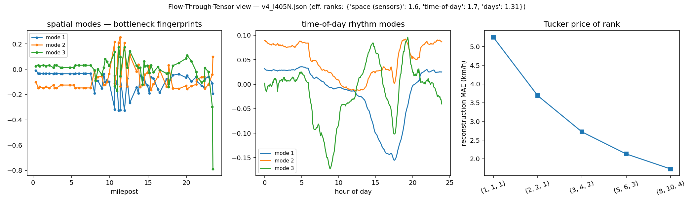

python -m cbi_pipeline.flow_tensor --json <compact.json>
· math: FLOW_TENSOR_MATH.md · glossary first if any symbol is new:
GLOSSARY.mdThe idea in four steps
Stack the corridor into a cube. 𝒳 ∈ ℝS×T×D, 𝒳s,t,d = speed at station s, time-of-day t, day d Every dashboard heatmap you have seen is one slice 𝒳·,·,d of this cube.
Unfold and factor (HOSVD). Flatten the cube three ways — by station, by time-of-day, by day — and take the leading singular vectors of each unfolding: 𝒳 ≈ 𝒢 ×₁ U ×₂ V ×₃ W The columns of U/V/W are not abstract: U = where congestion lives (bottleneck fingerprints), V = when it breathes (commute rhythms), W = which kind of day it was.
Ask the price of rank. How few patterns rebuild the whole week? That number IS the corridor's complexity — and the reason completion-from-sparse-probes works at all.
Use the network operators forward-only. Station-to-station flow differences along the sorted chain = net ramp exchange (conservation). With a given OD table the FTT chain q = Δd projects to links for an informational residual — never inverted, no dynamic OD.
The evidence (real I-405N v4 data)

Mode spectra — how fast the information concentrates
| mode | k | sigma | cum_explained |
|---|---|---|---|
| space (sensors) | 1 | 4414.1 | 0.7841 |
| space (sensors) | 2 | 1592.05 | 0.8861 |
| space (sensors) | 3 | 878.82 | 0.9172 |
| space (sensors) | 4 | 718.53 | 0.938 |
| space (sensors) | 5 | 530.25 | 0.9493 |
| space (sensors) | 6 | 432.89 | 0.9568 |
| space (sensors) | 7 | 408.83 | 0.9635 |
| space (sensors) | 8 | 342.2 | 0.9683 |
| space (sensors) | 9 | 334.19 | 0.9727 |
| space (sensors) | 10 | 316.92 | 0.9768 |
| time-of-day | 1 | 4338.64 | 0.7575 |
| time-of-day | 2 | 1669.57 | 0.8697 |
Price of rank
| rank | mae_kmh | vs_mean_baseline |
|---|---|---|
| (1, 1, 1) | 5.25 | 0.625 |
| (2, 2, 1) | 3.69 | 0.439 |
| (3, 4, 2) | 2.72 | 0.324 |
| (5, 6, 3) | 2.13 | 0.254 |
| (8, 10, 4) | 1.73 | 0.206 |
Flow-through residual (OD-free) — first station pairs
| between_stations | mean_exchange_vph | p95_abs_exchange_vph |
|---|---|---|
| 0->1 | 2478.1 | 3590.8 |
| 1->2 | 0.3 | 8.6 |
| 2->3 | -0.2 | 8.5 |
| 3->4 | 0.2 | 8.5 |
| 4->5 | -0.2 | 8.6 |
| 5->6 | 0.2 | 6.9 |
| 6->7 | -0.2 | 6.9 |
| 7->8 | 0.0 | 0.0 |